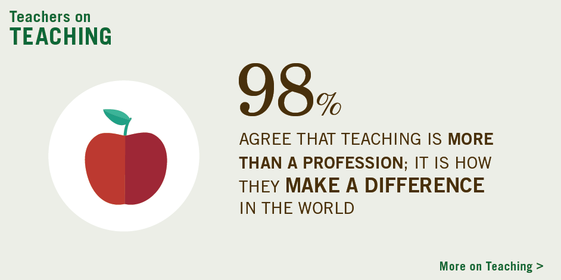

Redwan Reshid

Redwan Reshid(ር ድ ዎን ረሽ ድ ) is a father of two children. He began his teaching career in education as a an elemntery school general teacher in 20007 in Kerate, Sitie Zone, Ethiopia.He also got his Diploma in teaching from Hosaena Teachers College in 2015. Redwan has taught Algebra 1, Geometry, Siltigna, English, and Math Analysis. He holds a bachelor’s certificate in Education from Arbaminch College.
At Kerate Teaching , he created and ran the Professional Development program, including helping to achieve students goal. He has been a presenter at numerous education conferences, to include in Hulbarag, Worabe and Hosaena.  He also has written a series of elementary mathematics workbooks for his students. https://www.facebook.com/redwan.reshid.79
He also has written a series of elementary mathematics workbooks for his students. https://www.facebook.com/redwan.reshid.79